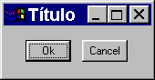
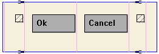

Most interface toolkits employ the concrete layout model, that is, control positioning in the
dialog is absolute in coordinates relative to the upper left corner of the dialog’s client area. This makes it easy to
position the controls on it by using an interactive tool usually provided with the system. It is also easy to
dimension them. Of course, this positioning intrinsically depends on the graphics system’s resolution. Moreover, when
the dialog size is altered, the elements remain on the same place, thus generating an empty area below and to the
right of the elements. Besides, if the graphics system’s resolution changes, the dialog inevitably will look larger or
smaller according to the resolution increase or decrease.
IUP implements an abstract layout concept, in which the positioning of controls is done relatively instead of absolutely. For such, composition elements are necessary for composing the interface elements. They are boxes and fillings invisible to the user, but that play an important part. When the dialog size changes, these containers expand or retract to adjust the positioning of the controls to the new situation.
Watch the codes below. The first one refers to the creation of a dialog for the Microsoft Windows
environment using its own resource API. The second uses IUP. Note that, apart from providing the specification greater
flexibility, the IUP specification is simpler, though a little larger. In fact, creating a dialog on IUP with several
elements will force you to plan your dialog more carefully – on the other hand, this will actually make its
implementation easier.
Moreover, this IUP dialog has an indirect advantage: if the user changes its size, the elements (due to being positioned on an abstract layout) are automatically re-positioned horizontally, because of the iupfill elements.
The composition elements are vertical boxes (vbox), horizontal boxes (hbox) and filling (fill).
There is also a depth box (zbox) in which layers of elements can
be created for the same dialog, and the elements in each layer are only visible when that given layer is active.
|
in Windows |
in IupLua |
dialogo DIALOG 0, 0, 108, 34
STYLE WS_MINIMIZEBOX | WS_MAXIMIZEBOX |
WS_CAPTION | WS_SYSMENU |
WS_THICKFRAME
CAPTION "Título"
BEGIN
PUSHBUTTON "Ok",IDOK,16,9,33,15
PUSHBUTTON "Cancel",IDCANCEL,57,9,33,15
END
|
dialogo = iup.dialog
{
iup.hbox
{
iup.fill{},
iup.button{title="Ok",size="40"},
iup.button{title="Cancel",size="40"},
iup.fill{}
;margin="15x15", gap="10"
}
;title="Título"
}
|
|
 |
|

Now see the same dialog in LED and in C:
|
in LED |
in C |
DIALOG[TITLE="Título"]
(
HBOX[MARGIN="15x15", GAP="10"]
(
FILL(),
BUTTON[SIZE="40"]("Ok",do_nothing),
BUTTON[SIZE="40"]("Cancel",do_nothing),
FILL()
)
)
|
dialog = IupSetAttributes(IupDialog
(
IupSetAttributes(IupHbox
(
IupFill(),
IupSetAttributes(IupButton("Ok", "do_nothing"), "SIZE=40"),
IupSetAttributes(IupButton("Cancel", "do_nothing"), "SIZE=40"),
IupFill(),
NULL
), "MARGIN=15x15, GAP=10"),
), "TITLE = Título")
|
Following, the abstract layout representation of this dialog:
|
Layout Hierarchy |
Layout Visualization |
Dialog
HBox
Fill
Button
Button
Fill
|
 |